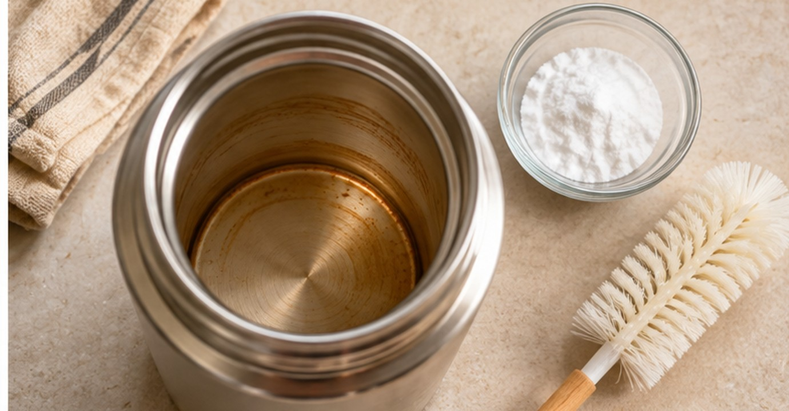
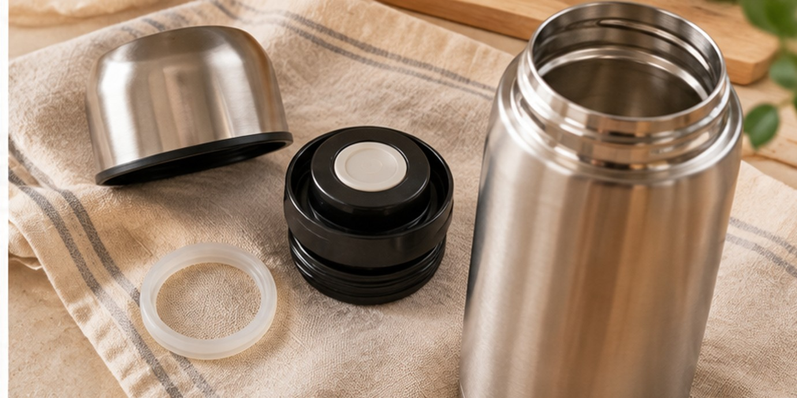

Как отмыть термос от чайного налёта и запаха, не испортив его
У термоса есть одна неприятная привычка: снаружи он выглядит почти как новый, а внутри постепенно появляется коричневый налёт. Даже свежий чай пахнет хуже.
Зимой, когда термос берут на прогулку, это особенно заметно. Но скрести колбу жёсткой губкой не нужно.
Сначала стоит заглянуть в инструкцию именно к вашему термосу. Советы ниже относятся прежде всего к обычным термосам с колбой из нержавеющей стали. Для стеклянных колб, окрашенных деталей и специальных покрытий правила могут отличаться.
Почему внутри появляется тёмный налёт
Чай оставляет на стенках окрашенные вещества, а кофе тоже постепенно меняет цвет внутренней поверхности. Если после напитка термос только сполоснуть водой, часть следов может остаться.
Сам по себе коричневый налёт ещё не означает, что термос испорчен, но остатки напитка лучше удалять регулярно.
Начните с обычного мытья. Налейте немного тёплой воды, добавьте каплю средства для посуды и осторожно пройдитесь мягкой щёткой для бутылок. Затем тщательно промойте чистой водой.
Маленькая подсказка: щётка должна свободно входить в горлышко. Не стоит проталкивать её с усилием, особенно если внутри есть выступающие детали.

Если обычное мытьё не помогло
Для стойкого чайного налёта в стальной колбе производители термосов допускают раствор пищевой соды. Например, для некоторых моделей Thermos рекомендует чайную ложку соды на горячую воду и выдержку до ночи; Stanley описывает более короткое замачивание около получаса.
Поэтому универсального времени для любого термоса нет. Если инструкция разрешает такую очистку, можно начать с более короткого варианта: растворить чайную ложку пищевой соды в тёплой воде, налить в колбу и оставить примерно на 30 минут.
Затем пройтись мягкой щёткой, вылить раствор и несколько раз тщательно ополоснуть термос. Если загрязнение осталось, посмотрите, разрешает ли производитель более длительное замачивание.
Во время такого замачивания крышку не закручивают. Это особенно важно, если используются специальные очищающие таблетки: некоторые из них выделяют газ. Не нужно превращать кухонную уборку в опыт по физике.
Крышка может пахнуть сильнее колбы
Если стенки уже чистые, а запах остался, проверьте крышку, клапан и уплотнение.
В углублениях задерживаются капли чая, даже когда снаружи крышка выглядит чистой.
Разберите только те части, которые разрешено снимать по инструкции. Промойте их тёплой водой с мягким средством для посуды. Для узких канавок пригодится небольшая мягкая щётка.
Если уплотнитель нельзя извлечь без усилий, не поддевайте его ножом: можно повредить деталь, от которой зависит герметичность.

Промойте детали и собирайте крышку, когда они полностью высохнут.
Чего лучше не делать
Стальная вата, абразивные порошки и грубые губки могут оставить царапины.
Не используйте хлорный отбеливатель или средства с хлором, если производитель их запрещает. Для многих термосов из нержавеющей стали такие составы прямо исключены из инструкции по уходу.
Не стоит и ставить любой термос в посудомоечную машину «для верности». Некоторые модели это допускают, другие нет. Смотрите обозначения на изделии или руководство к конкретной модели.
Не смешивайте чистящие средства. Перед новым способом полностью промойте колбу.
Как высушить, чтобы запах не вернулся
После мытья оставьте термос открытым. Снимите крышку, слейте оставшуюся воду и поставьте детали сушиться так, чтобы воздух доходил до внутренних поверхностей.
Хранить термос с плотно закрученной крышкой, когда он ещё влажный, не лучшая идея. Даже если колба сияет, оставшаяся в уплотнениях влага может стать причиной затхлого запаха.
Перед использованием проверьте, правильно ли установлены уплотнители. Потерянная резинка способна испортить всю прогулку.
Одна простая привычка на каждый день
Лучше всего мыть термос вскоре после использования, особенно если в нём был сладкий чай или кофе с молоком. Промойте колбу и крышку, дайте им высохнуть отдельно и только потом убирайте на полку.
Каждый раз замачивать колбу не нужно. Это способ для заметного налёта.
В зимних прогулках хороший термос действительно выручает. И особенно приятно, когда следующий чай пахнет чаем, а не тем, что наливали позавчера.
Если вам близки простые домашние советы без сложных средств, оставайтесь на канале «Красиво жить». Здесь регулярно появляются идеи для уютного и удобного быта.
А вы чаще берёте термос с собой на прогулки или пользуетесь им дома?